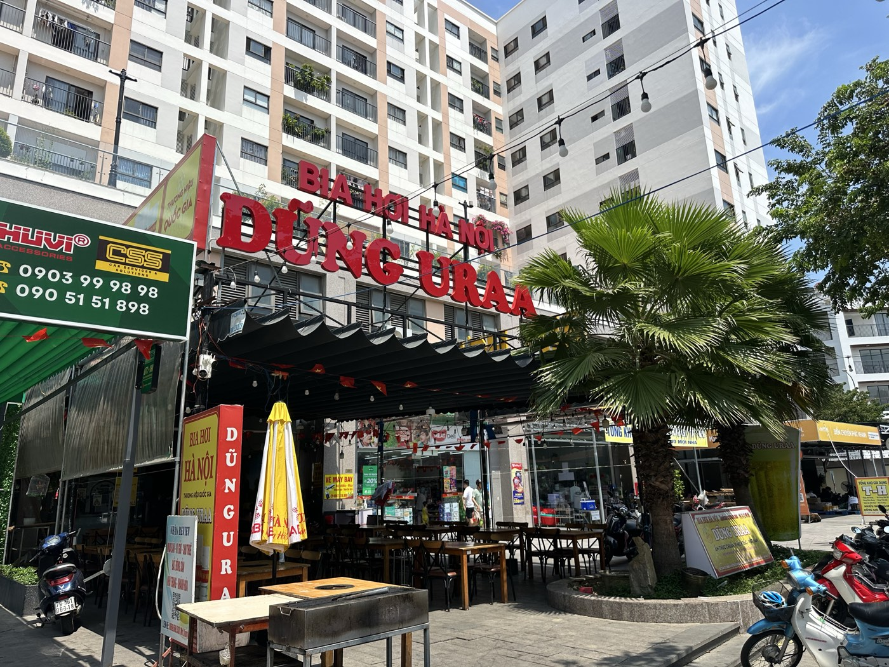

Một quán, một cái tên: vì sao tôi sửa tên quán cho giống hệt nhau trên mọi kênh
Đầu tháng 10, tôi ngồi gõ tên quán mình lên Google Maps, Facebook, rồi lật cả hoá đơn máy tính tiền ra xem. Mỗi nơi một cái tên. Mình biết rõ quán mình chỉ có một. Nhưng khách và Google thì không biết.

Biển hiệu ngoài cửa ghi một tên. Từ đầu tháng 10, tôi sửa để mọi nơi trên mạng cũng ghi đúng tên đó.
Một quán bia hơi, ít nhất bốn cái tên
Quán bia hơi Hà Nội của vợ chồng tôi ở Nha Trang mở từ năm 2022. Qua mấy năm, cái tên đã đổi theo từng giai đoạn: lúc đầu là "Nhà hàng URAA", trong nhà quen gọi tắt là "nhà hàng 1"; máy tính tiền ghi một kiểu; trên giấy tờ là tên công ty cũ; hệ thống từng có nhiều cơ sở đánh số nên còn có cả "URAA 2". Đến khi quán dọn về chỗ hiện tại và đổi tên thành DŨNG URAA, những cái tên cũ vẫn nằm rải rác khắp nơi.
Với người trong quán, đó chỉ là chuyện tên gọi. Với người ngoài, đó là bốn địa chỉ khác nhau trên mạng. Hệ quả tôi thấy rõ:
- Khách tìm không ra. Người được bạn giới thiệu gõ "Dũng URAA" nhưng hồ sơ trên Maps lại mang tên cũ, nên kết quả hiện lên lộn xộn.
- Google hiểu thành nhiều nơi. Đánh giá, ảnh, lượt tìm bị chia ra nhiều tên thay vì dồn về một chỗ.
- Lỗi nhỏ mà khó chịu. Trang Facebook của quán một thời gian dài không cho khách check-in. Tôi tìm mãi mới ra nguyên nhân: trang chưa khai địa chỉ.
Chốt một tên duy nhất và không thêm chữ nào
Ngày 1/10/2026, tôi ngồi lại và chốt: mọi kênh chỉ dùng đúng một tên, viết giống hệt nhau từng chữ:
DŨNG URAA - Bia Hơi Hà Nội
Lúc đầu tôi cũng muốn thêm cho "kêu": kiểu "số 2 tại Nha Trang" hay chèn thêm từ khoá. Tôi bỏ ý đó vì hai lý do. Một, hướng dẫn của Google cho hồ sơ doanh nghiệp yêu cầu tên trên Maps phải là tên thật đang dùng ngoài đời, nhồi thêm từ khoá có thể bị khoá hồ sơ. Hai, "URAA 2" từng là tên một cơ sở cũ, đặt lại dễ làm khách nhầm hơn.
Phần sau chữ "DŨNG URAA" chỉ để nói quán bán gì. Người lạ đọc vào là hiểu ngay đây là quán bia hơi Hà Nội, không phải tên một công ty nào đó.
Tôi đã sửa những gì, việc nào còn dở
| Kênh | Đã làm | Trạng thái |
|---|---|---|
| Google Maps | Đổi tên, đổi danh mục chính sang "Quán bia" | Google đã duyệt tên mới tối 1/10/2026 |
| Thêm địa chỉ để khách check-in được, viết lại phần giới thiệu, gửi yêu cầu đổi tên trang | Đã gửi yêu cầu đổi tên | |
| Website | Trang riêng cho quán: địa chỉ, giờ mở cửa, món tiêu biểu, bản đồ | Đã chạy từ 1/10/2026 |
| App giao đồ ăn, Zalo OA | Đồng bộ tên và địa chỉ | Còn dở |
| Máy tính tiền, mẫu báo cáo | Bỏ địa chỉ cũ còn sót lại | Còn dở |
Tôi ghi rõ hai dòng "còn dở" vì đó là phần dễ bị quên nhất. Biển hiệu và Maps thì ai cũng nhớ sửa. Còn hoá đơn in ra từ máy tính tiền vẫn ghi địa chỉ cũ thì ít ai để ý, trong khi chỉ cần một vị khách cầm hoá đơn đi tìm theo địa chỉ đó là lạc.
Bốn điều tôi nghĩ chủ quán nhỏ nào cũng nên làm
- Tên, địa chỉ, số điện thoại, giờ mở cửa giống hệt nhau ở mọi nơi. Không phải "gần giống". Một chữ "Bia hơi" viết hoa ở chỗ này, viết thường ở chỗ kia thì không sao; nhưng thêm bớt hẳn một cụm từ, hoặc mỗi nơi một số điện thoại, là khách và máy tìm kiếm đều phải đoán.
- Lục lại các chỗ còn ghi thông tin cũ. Máy tính tiền, mẫu hoá đơn, app giao hàng, danh thiếp, chữ ký email. Dọn quán thì nhớ dọn luôn mấy chỗ này.
- Viết mô tả cho người ở gần, không viết cho người ở xa. Khách của quán bia hơi là người dân quanh đó. Mô tả nên trả lời ba câu: quán ở khu nào, bán món gì, hợp đi với ai. Bỏ những câu kiểu "số 1", "đỉnh nhất".
- Gom đánh giá về đúng một hồ sơ. Tôi làm thẻ mã QR đặt trên bàn dẫn thẳng tới trang đánh giá của đúng hồ sơ đã đổi tên, để lời khen của khách không bị rơi sang nơi khác.
Điều tôi không hứa
Sau một tháng, tôi chưa dám nói quán đã "lên top" ở từ khoá nào. Tên mới mới được duyệt, nhiều kênh còn đang sửa. Thứ tôi chắc chắn được là: từ giờ, ai được bạn bè giới thiệu "ra DŨNG URAA uống bia hơi" thì gõ đúng cái tên đó sẽ ra đúng một quán.
Làm nghề bất động sản, tôi hay dặn khách: một mảnh đất phải có một cái tên rõ ràng trên giấy tờ thì mới yên tâm. Hoá ra cái quán của mình cũng cần y như vậy.
Bài viết kể lại việc tôi tự làm cho quán từ ngày 1/10/2026, trạng thái các kênh ghi theo thời điểm 31/10/2026. Quy định đặt tên trên Google có thể thay đổi; chủ quán nên đọc hướng dẫn mới nhất trong phần quản lý hồ sơ doanh nghiệp của Google trước khi sửa.
"Rồi, ngày mới tốt lành nhé."
Sống tử tế · Kiếm tiền hạnh phúc · Cho đi giá trị
Tìm "DŨNG URAA - Bia Hơi Hà Nội" là ra đúng quán
Bia hơi Hà Nội chính gốc ở Nha Trang, mở cửa 10h–23h hằng ngày. Xem địa chỉ và chỉ đường trên Google Maps, hoặc nhắn tôi để đặt bàn.
Đặt bàn qua Zalo — 0869 668 638